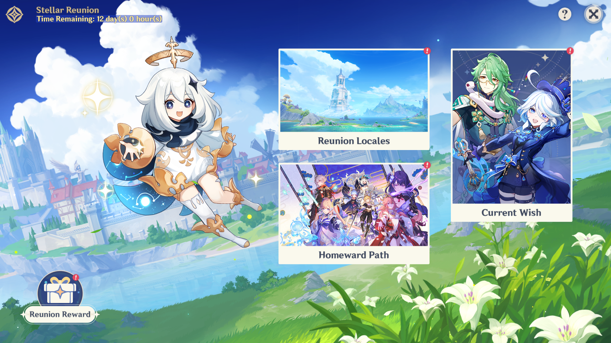

Stellar Reunion (Event)
Stellar Reunion has gotten a new look!
You can now earn rewards by completing new sets of missions including; Reunion Locales where you explore the new regions and clearing 3 given Archon quests for the Homeward Path!
Passage of Time daily login rewards increased to 500 Primogems, 5 Fragile Resin and 1 Northlander Billet Trove total. There is also the Reunion Blessing which provides 4 daily double rewards from Domains of Blessing, Forgery, Mastery or Ley Line Blossoms for 7 days, increased from 3 daily attempts. Finally Returning Companions provides 3 Keys you can use to unlock Character Story Quests and Hangouts for free. Returning Gift Package and Homeward Path daily quests have been removed, distributing their rewards among the other benefits.
In total you can now obtain 500 Primogems, 8 Fragile Resin, 54 Hero's Wits, 48 Mystic Enhancement Ore and 630000 Mora in addition to the double drops and Returning Companions Keys!
